処理の流れ
ブラウザー、Web サーバ、アプリケーション、データベースの連携を追える。
この回では、第3回以降の Azure ハンズオンで登場する VM、コンテナ、DB などを「Web 3層のどの役割か」という共通の見方で整理します。
今日は個別サービス名を暗記するより、Web/AP/DB の責務、処理の流れ、以降の演習で作る範囲を説明できる状態を目指します。
ブラウザー、Web サーバ、アプリケーション、データベースの連携を追える。
Web 層、AP 層、DB 層がそれぞれ何を担当するか説明できる。
モノリシック構成と Web 3層構成の違いを説明できる。
第3回から第6回で作るものを、3層の観点で見通せる。
これからのハンズオンは、VM 上の NGINX から始め、コンテナ、Container Apps、PostgreSQL を組み合わせる Todo アプリへ段階的に広げます。
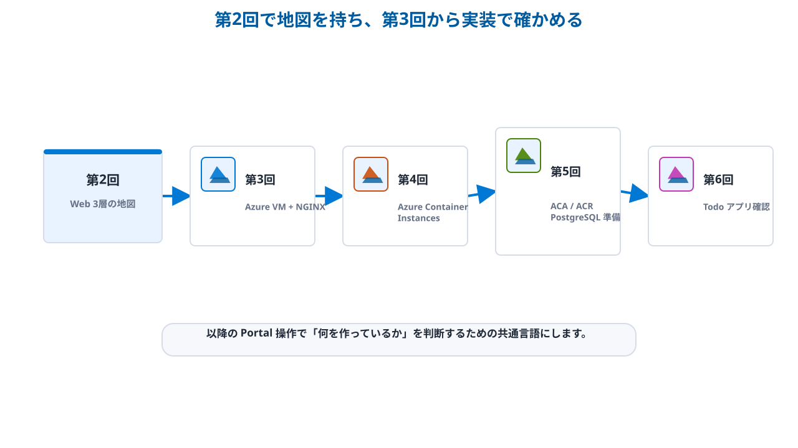
Azure Portal の操作手順だけを追うとリソース名が点で残るため、先にアーキテクチャの地図を持ち、作成する対象の意味と接続関係を確認します。
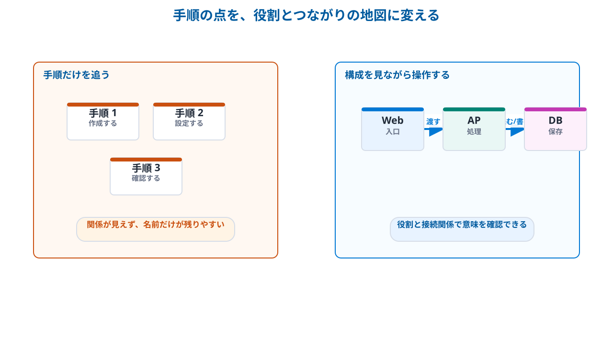
Web アプリケーションは、ブラウザーからの要求を受け取り、サーバー側の処理を経て、HTML や JSON などの結果を返す一連の仕組みです。
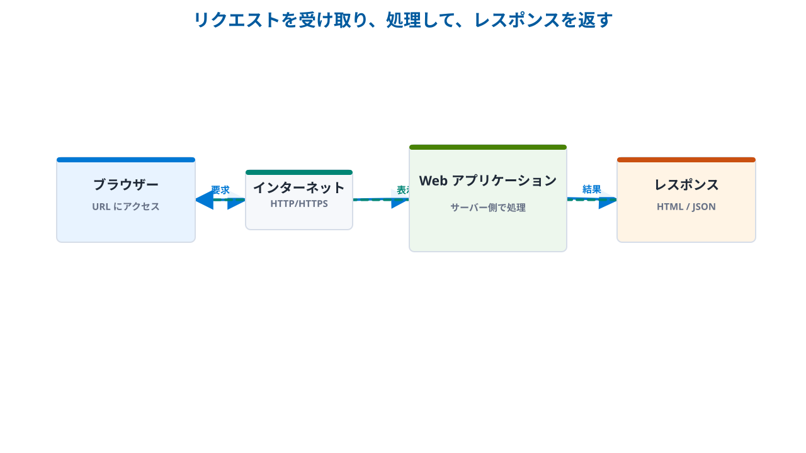
小規模な構成では Web、アプリケーション、DB を1台に同居させることもあり、まずはこの単純な形から役割の違いを見ていきます。
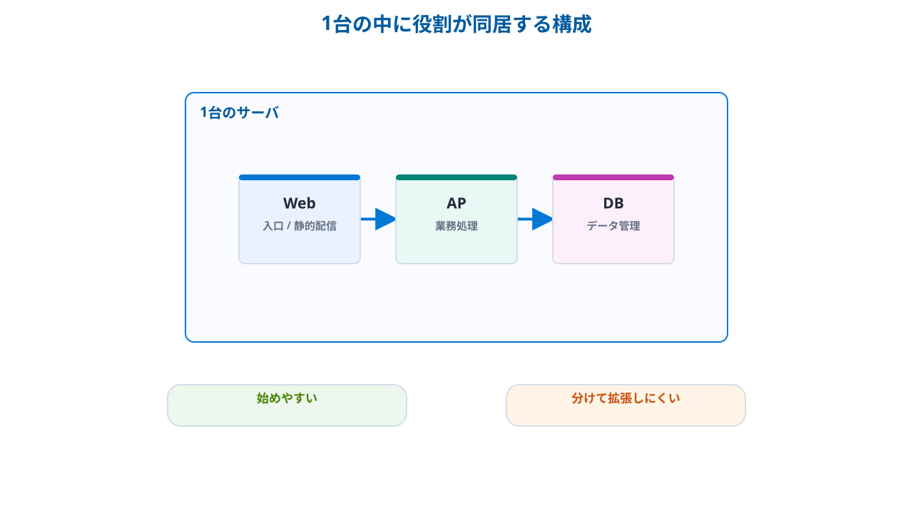
1台にまとめた構成は始めやすい一方で、規模が大きくなると拡張、障害対応、変更範囲の分離が難しくなるため、利点と注意点をセットで確認します。
| 観点 | 利点 | 注意点 |
|---|---|---|
| 構築 | 必要なサーバやネットワーク構成が少ない。 | 役割が同居するため、後から責任範囲を分けにくい。 |
| 通信 | 同じサーバ内で処理できるため、経路が単純。 | 障害が起きたとき、影響範囲が Web/AP/DB 全体へ広がりやすい。 |
| 運用 | 見る対象が少なく、初期学習で全体を追いやすい。 | 規模が大きくなると、一部だけを拡張・変更しにくい。 |
Web 3層では、利用者に近い入口、業務処理、データ管理を分け、どの処理をどの層が担当するかを論理的な役割として整理します。
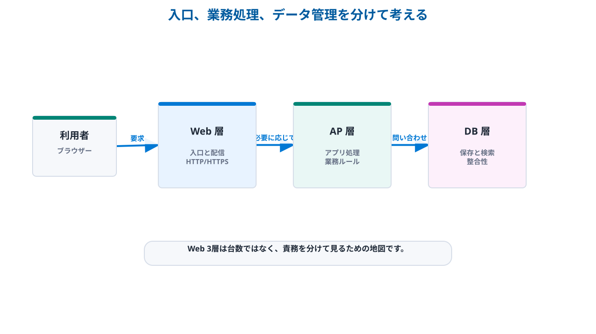
Web 3層はサーバー台数の指定ではなく役割分担の考え方なので、1台同居、複数台分離、マネージドサービス利用のどれでも表現できます。
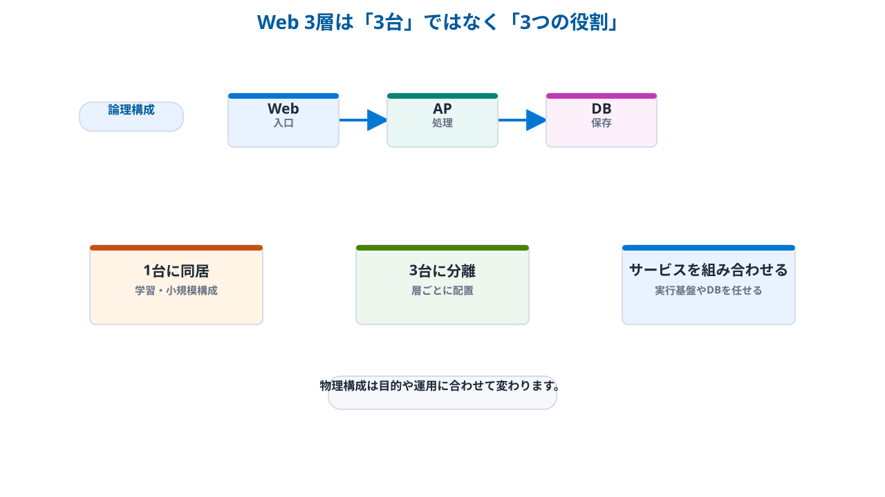
ブラウザーからの要求が Web 層で受け付けられ、AP 層で処理され、必要に応じて DB 層を参照して結果が返る流れを順番に追います。
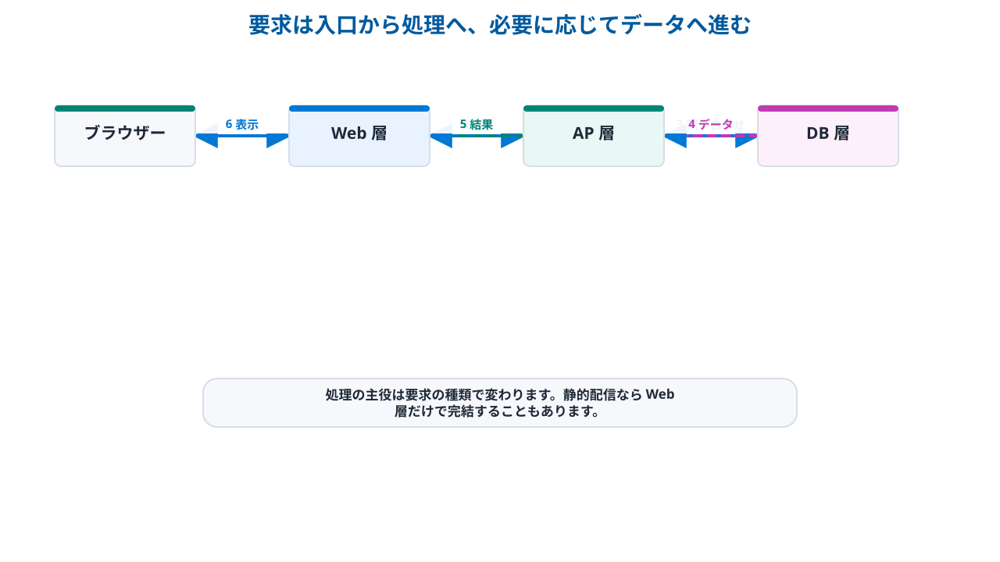
層を分けると責任範囲や拡張単位を整理しやすくなりますが、その分だけ通信経路、認証、監視対象が増えることも理解します。
Web 層は利用者から最初にアクセスされる入口であり、静的ファイルの配信、HTTP/HTTPS の受付、AP 層への転送などを担当します。
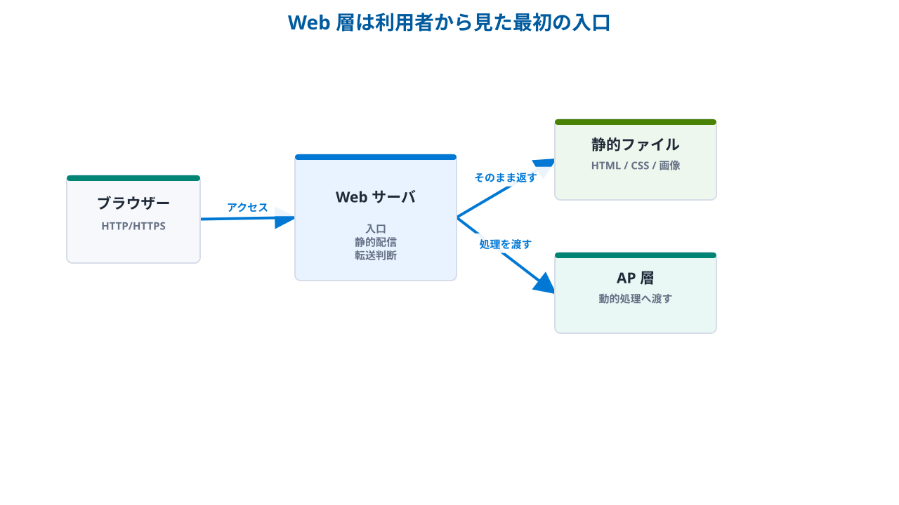
画面や画像のようにそのまま返せる静的コンテンツと、検索結果や Todo 一覧のように処理後に生成される動的コンテンツを区別します。
HTML、CSS、JavaScript、画像など。内容は事前に用意されている。
ログイン結果、注文結果、Todo 一覧、API レスポンスなど。AP 層や DB 層と連携する。
Web サーバには NGINX、Apache HTTP Server、IIS などがあり、第3回では Azure VM 上に NGINX を配置して入口の役割を体験します。
| 名前 | よくある使われ方 |
|---|---|
| NGINX | 静的配信、リバースプロキシ、軽量な Web サーバ。 |
| Apache HTTP Server | 幅広い環境で使われる汎用 Web サーバ。 |
| IIS | Windows Server と組み合わせて使われる Web サーバ。 |
第3回では Public IP、NSG、Azure VM、NGINX をつなげ、インターネットから Web 層に到達できる状態を Azure Portal で確認します。
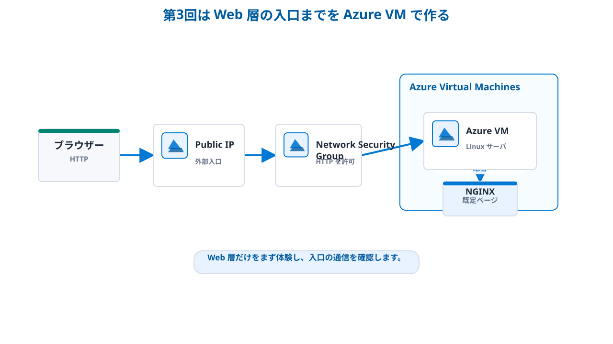
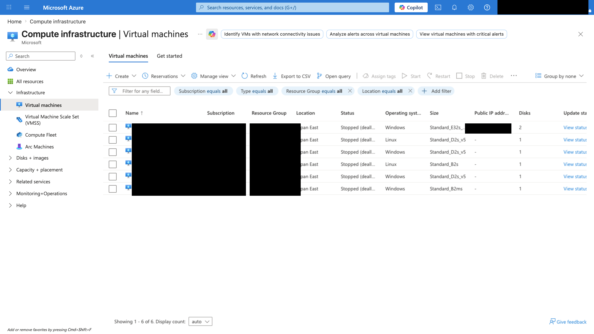
AP 層は利用者の入力や API リクエストを受け取り、入力チェック、業務ルール、DB への問い合わせなどアプリ固有の処理を担当します。
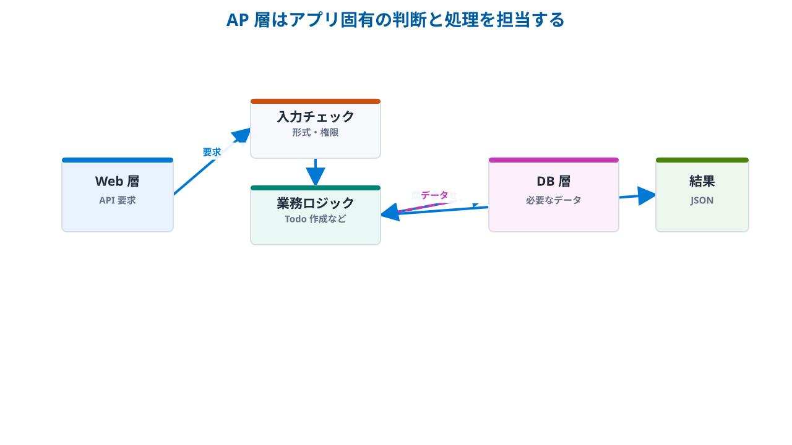
AP 層の実装は Node.js、Java/Spring、.NET、Python/FastAPI など多様で、ここでは製品比較ではなく役割の違いに注目します。
| 例 | 位置づけ |
|---|---|
| Node.js | JavaScript / TypeScript で API を実装する選択肢。 |
| Java / Spring | 業務アプリケーションでよく使われる実装基盤。 |
| .NET | Web API や業務処理を構築できる Microsoft 系の基盤。 |
| Python / FastAPI | 軽量な API やデータ処理と組み合わせやすい選択肢。 |
Web 層と AP 層を分けることで、利用者の入口、静的配信、API 処理、業務ロジックを別々に変更・拡張しやすくなります。
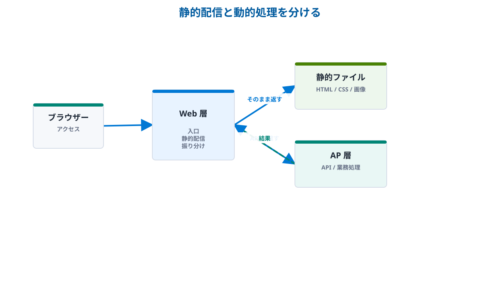
DB 層はアプリケーションのデータを安全に保存し、検索、更新、同時アクセス、トランザクションなどを扱う信頼できるデータ管理場所です。
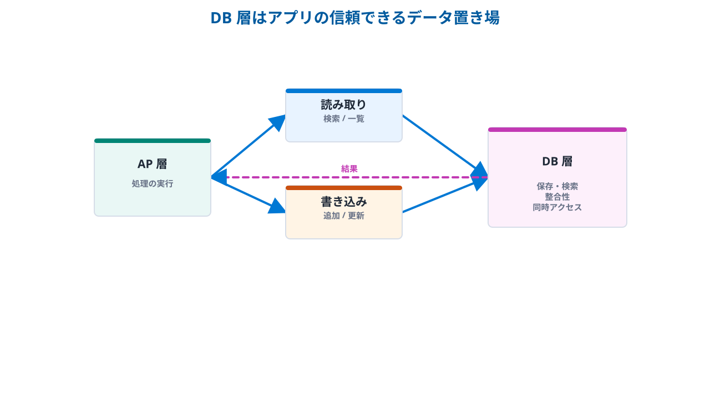
代表的な RDBMS には PostgreSQL、MySQL、SQL Server、Oracle Database があり、第5回から第6回では PostgreSQL を使います。
| 名前 | 補足 |
|---|---|
| PostgreSQL | 第5回から第6回で Azure Database for PostgreSQL として扱う。 |
| MySQL | Web アプリケーションで広く使われる RDBMS。 |
| SQL Server | Azure SQL Database など Microsoft のマネージド DB とつながる。 |
| Oracle Database | 大規模な基幹系システムで見かけることが多い。 |
AP 層は自分でデータを保持せず、認証情報、接続設定、ネットワーク到達性を使って DB 層に問い合わせ、必要な結果を受け取ります。
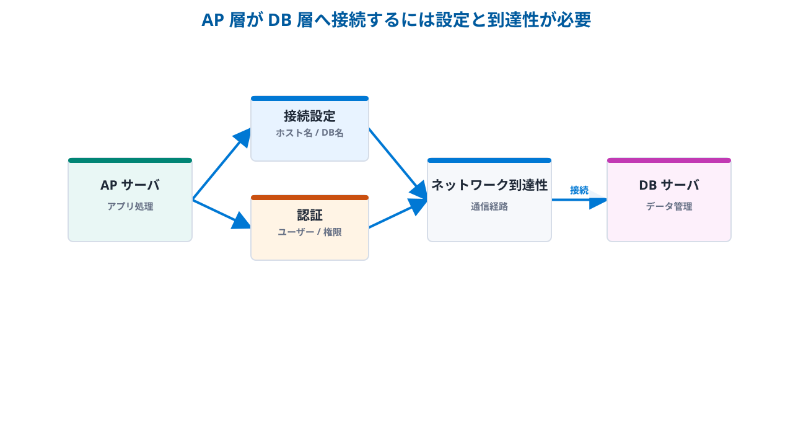
第5回から第6回では Azure Database for PostgreSQL を使い、Todo アプリのデータ保存を Azure のマネージド DB として扱います。
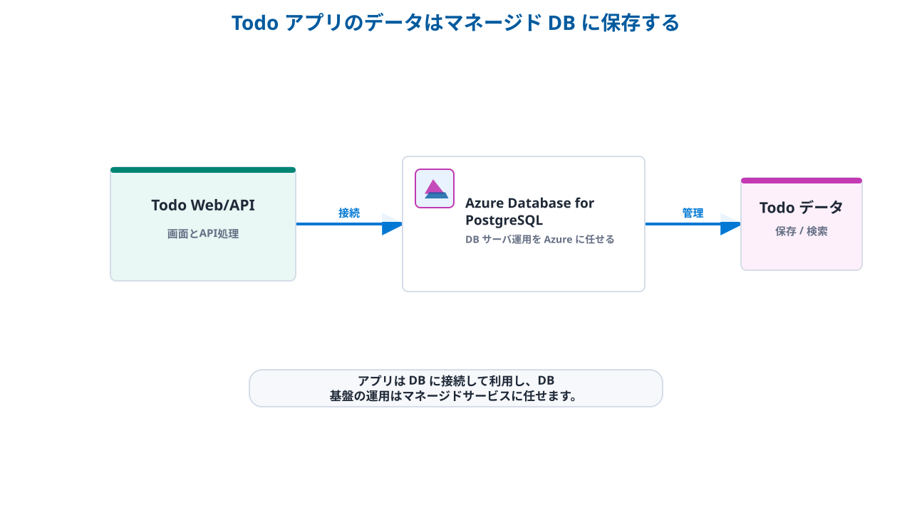
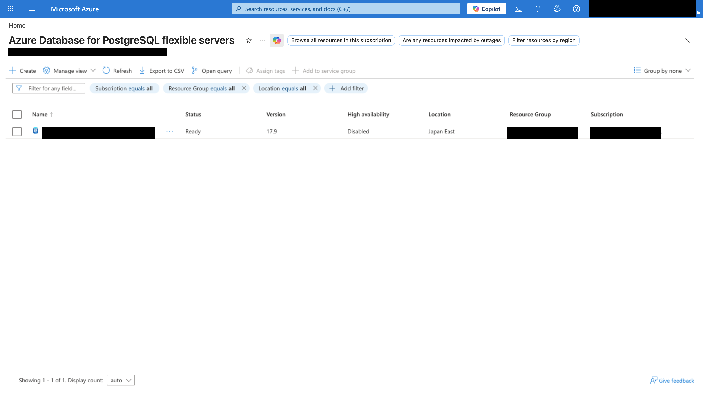
Azure VM を使った IaaS 構成では、Web/AP/DB の各層を分けて配置し、ネットワーク、負荷分散、DB の高可用性を組み合わせます。
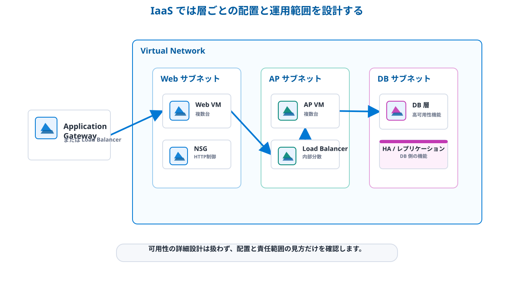
VM を使う構成では自由度が高い一方、OS、ミドルウェア、パッチ、監視、スケールなど利用者が設計・運用する範囲も広がります。
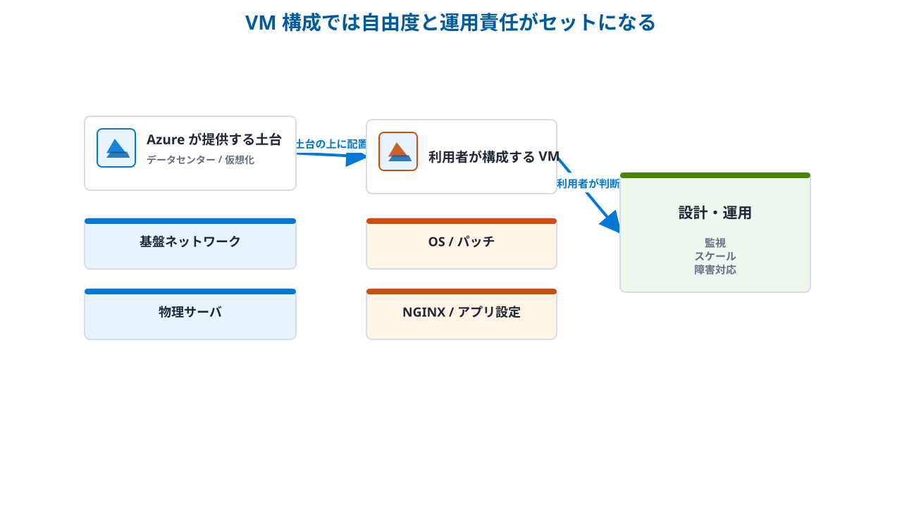
第3回では Web 3層すべてを作るのではなく、まず Web 層に相当する NGINX on Azure VM を作り、入口までの通信を体験します。
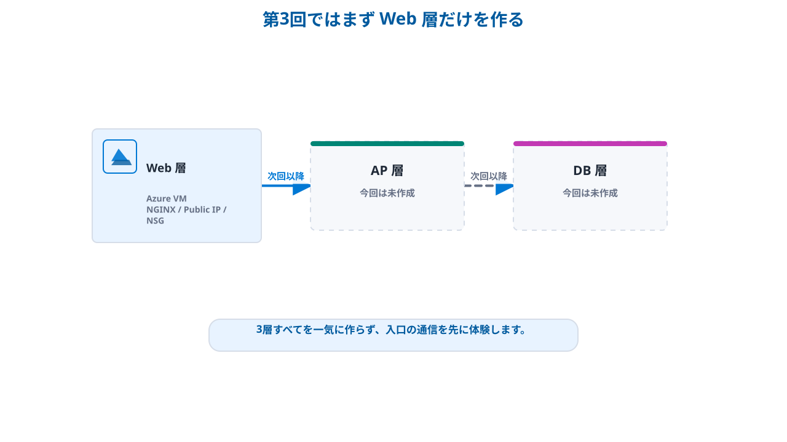
Container Apps を使うと、コンテナ化した Web/API をマネージドな実行環境で動かしつつ、DB には PostgreSQL などのサービスを組み合わせられます。
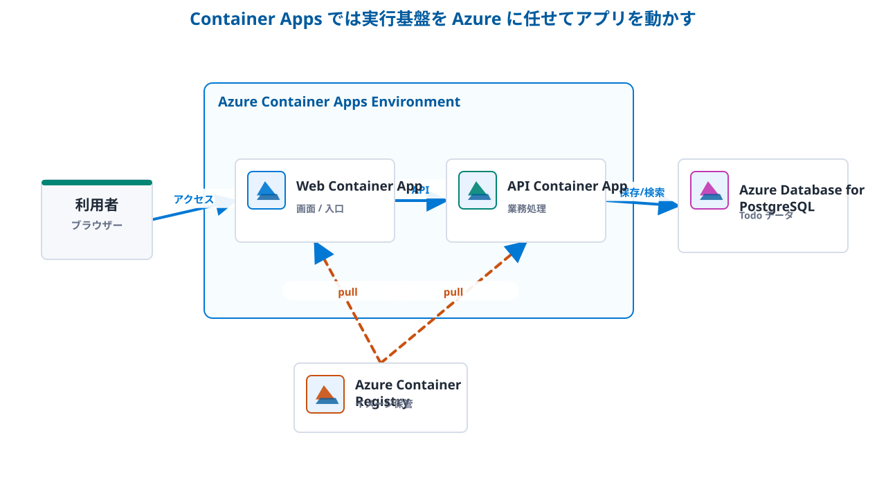
第4回では ACI で単体コンテナを動かし、第5回から第6回では ACA、ACR、PostgreSQL を組み合わせた複数サービス構成に進みます。
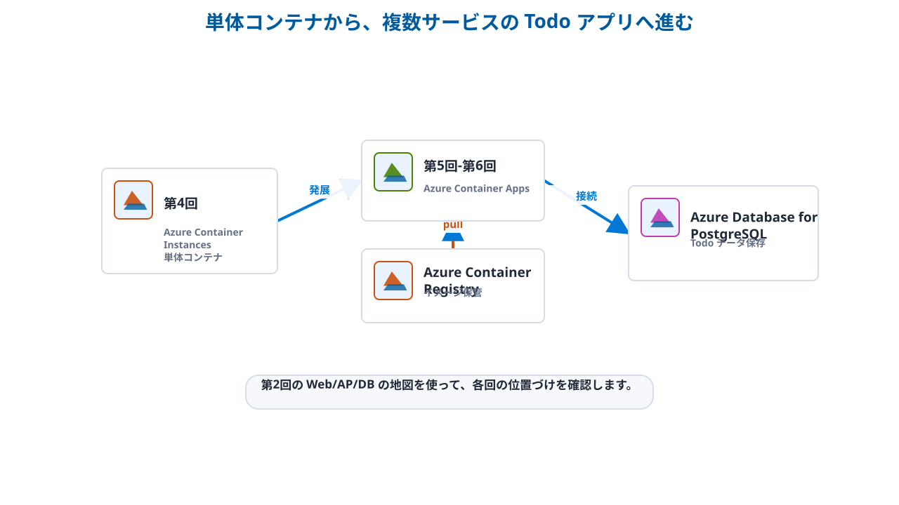
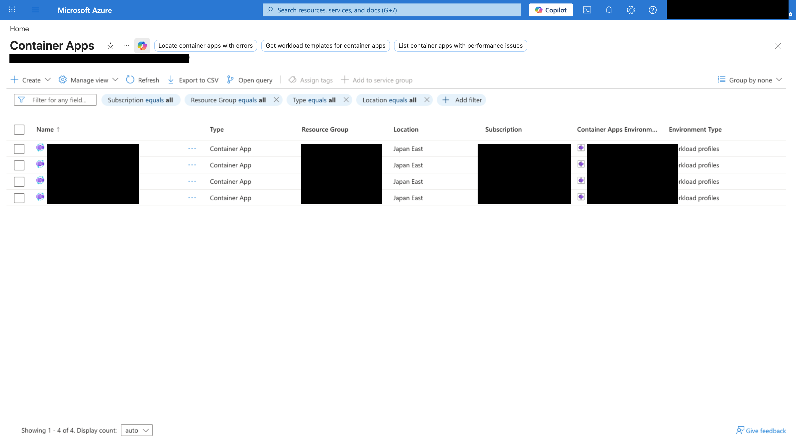
SPA では画面表示の多くをブラウザー側で行い、静的ホスティング、API、データサービスを組み合わせる構成として Web 3層とは別の見方をします。
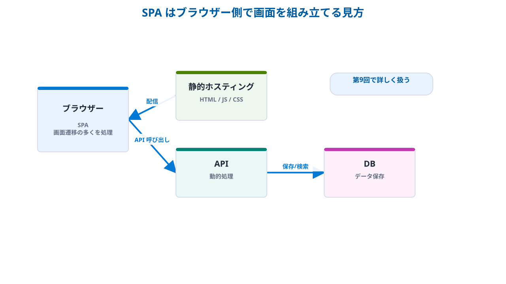
第9回では Azure Static Web Apps を入口に、静的 Web サイト、SPA、Functions/API、データサービスの関係を改めて整理します。
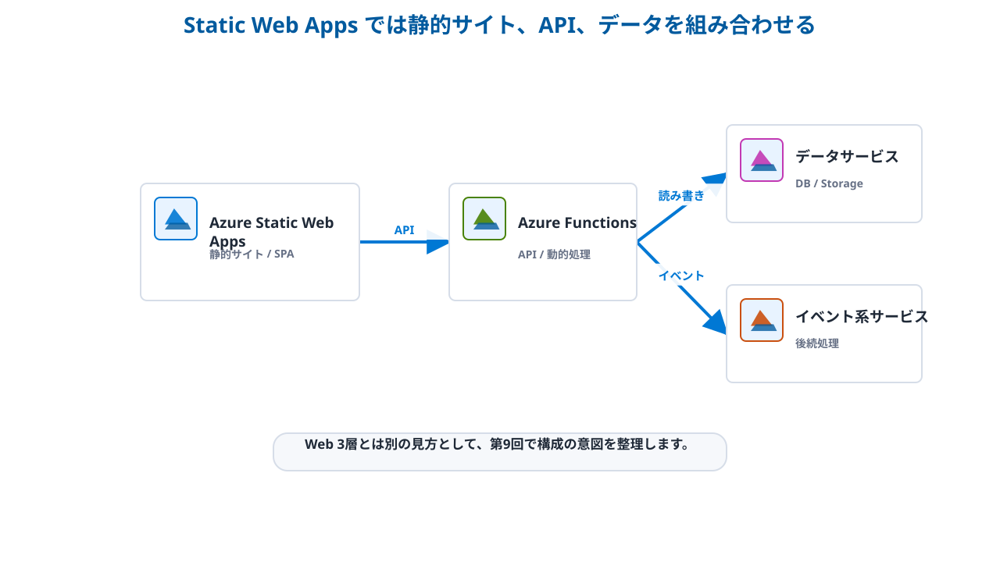
データベースはすべて同じではなく、表形式で整合性を重視する RDBMS と、柔軟なデータ構造や分散を得意とする NoSQL を使い分けます。
| 観点 | RDBMS | NoSQL |
|---|---|---|
| データの形 | 表、行、列を中心に整理する。 | ドキュメント、キー値、グラフなど多様。 |
| 得意なこと | 整合性が重要な業務データを扱いやすい。 | 柔軟なデータ構造や大規模分散に向く。 |
| Azure の例 | Azure SQL Database、Azure Database for PostgreSQL | Azure Cosmos DB |
Web 3層は Azure リソースを理解するための地図であり、次回以降はこの地図の一部を実際の Portal 操作で作って確認します。
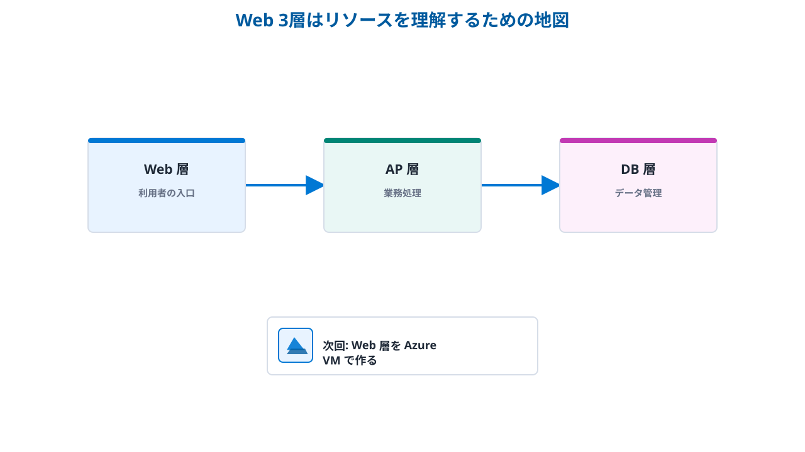
クイズでは、入口となる層、3台必須ではないこと、Todo を保存する層を確認し、自分の言葉で第3回へつながる説明にします。
利用者からのリクエストを最初に受ける入口に相当する層はどれですか。
正解: Web 層
Web 3層アーキテクチャは、必ず3台のサーバで構成しなければならない。正しいですか。
正解: 正しくない
Todo アプリで「Todo を保存する」役割にもっとも近い層はどれですか。
正解: DB 層